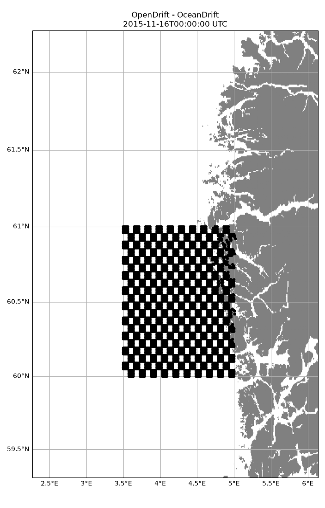
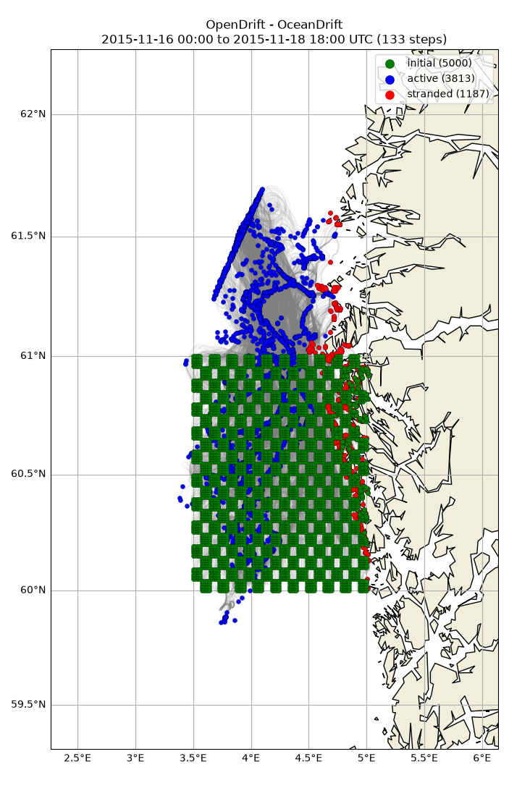

Note
Go to the end to download the full example code.
Checkerboard
import numpy as np
from opendrift import test_data_folder as tdf
from opendrift.readers import reader_global_landmask
from opendrift.readers import reader_netCDF_CF_generic
from opendrift.models.oceandrift import OceanDrift
o = OceanDrift(loglevel=20) # Set loglevel to 0 for debug information
# Norkyst
#reader_norkyst = reader_netCDF_CF_generic.Reader('https://thredds.met.no/thredds/dodsC/fou-hi/norkystv3_800m_m00_be')
reader_norkyst = reader_netCDF_CF_generic.Reader(tdf + '16Nov2015_NorKyst_z_surface/norkyst800_subset_16Nov2015.nc')
o.add_reader([reader_norkyst])
o.set_config('drift:vertical_mixing', False)
13:54:21 INFO opendrift:569: OpenDriftSimulation initialised (version 1.14.11 / v1.14.12-9-g6f1a4a0)
13:54:21 INFO opendrift.readers:67: Opening file with xr.open_dataset
13:54:22 INFO opendrift.readers.reader_netCDF_CF_generic:340: Detected dimensions: {'x': 'X', 'y': 'Y', 'z': 'depth', 'time': 'time'}
Seeding particles in a checkerboard pattern
di = 5 # Horizontal number of particles per square
dj = 5 # Vertical number of particles per square
lons = np.linspace(3.5, 5.0, 100)
lats = np.linspace(60, 61, 100)
ii = np.arange(len(lons))//di
jj = np.arange(len(lats))//dj
ii, jj = np.meshgrid(ii, jj)
board = (ii+jj)%2 > 0
lons, lats = np.meshgrid(lons, lats)
lons = lons[board].ravel()
lats = lats[board].ravel()
o.seed_elements(lons, lats, radius=0, number=5000,
time=reader_norkyst.start_time)
13:54:22 INFO opendrift.models.basemodel.environment:203: Adding a global landmask from GSHHG
13:54:28 INFO opendrift.models.basemodel.environment:227: Fallback values will be used for the following variables which have no readers:
13:54:28 INFO opendrift.models.basemodel.environment:230: sea_surface_height: 0.000000
13:54:28 INFO opendrift.models.basemodel.environment:230: x_wind: 0.000000
13:54:28 INFO opendrift.models.basemodel.environment:230: y_wind: 0.000000
13:54:28 INFO opendrift.models.basemodel.environment:230: upward_sea_water_velocity: 0.000000
13:54:28 INFO opendrift.models.basemodel.environment:230: ocean_vertical_diffusivity: 0.000000
13:54:28 INFO opendrift.models.basemodel.environment:230: horizontal_diffusivity: 0.000000
13:54:28 INFO opendrift.models.basemodel.environment:230: sea_surface_wave_significant_height: 0.000000
13:54:28 INFO opendrift.models.basemodel.environment:230: sea_surface_wave_stokes_drift_x_velocity: 0.000000
13:54:28 INFO opendrift.models.basemodel.environment:230: sea_surface_wave_stokes_drift_y_velocity: 0.000000
13:54:28 INFO opendrift.models.basemodel.environment:230: ocean_mixed_layer_thickness: 50.000000
13:54:28 INFO opendrift.models.basemodel.environment:230: sea_floor_depth_below_sea_level: 10000.000000
Running model
o.run(steps=66*2, time_step=1800)
13:54:28 INFO opendrift:1910: Skipping environment variable ocean_vertical_diffusivity because of condition ['drift:vertical_mixing', 'is', False]
13:54:28 INFO opendrift:1910: Skipping environment variable ocean_mixed_layer_thickness because of condition ['drift:vertical_mixing', 'is', False]
13:54:28 INFO opendrift:1921: Storing previous values of element property lon because of condition (('general:coastline_action', 'in', ['stranding', 'previous']), 'or', ('general:seafloor_action', 'in', ['previous']))
13:54:28 INFO opendrift:1921: Storing previous values of element property lat because of condition (('general:coastline_action', 'in', ['stranding', 'previous']), 'or', ('general:seafloor_action', 'in', ['previous']))
13:54:28 INFO opendrift:1929: Storing previous values of environment variable sea_surface_height because of condition ['drift:vertical_advection', 'is', True]
13:54:28 INFO opendrift:958: Using existing reader for land_binary_mask to move elements to ocean
13:54:28 INFO opendrift:991: Moving 217 out of 5000 points from land to water
13:54:28 INFO opendrift:2237: 2015-11-16 00:00:00 - step 1 of 132 - 5000 active elements (0 deactivated)
13:54:28 INFO opendrift:2237: 2015-11-16 00:30:00 - step 2 of 132 - 5000 active elements (0 deactivated)
13:54:28 INFO opendrift:2237: 2015-11-16 01:00:00 - step 3 of 132 - 4883 active elements (117 deactivated)
13:54:28 INFO opendrift:2237: 2015-11-16 01:30:00 - step 4 of 132 - 4811 active elements (189 deactivated)
13:54:29 INFO opendrift:2237: 2015-11-16 02:00:00 - step 5 of 132 - 4765 active elements (235 deactivated)
13:54:29 INFO opendrift:2237: 2015-11-16 02:30:00 - step 6 of 132 - 4730 active elements (270 deactivated)
13:54:29 INFO opendrift:2237: 2015-11-16 03:00:00 - step 7 of 132 - 4699 active elements (301 deactivated)
13:54:29 INFO opendrift:2237: 2015-11-16 03:30:00 - step 8 of 132 - 4677 active elements (323 deactivated)
13:54:29 INFO opendrift:2237: 2015-11-16 04:00:00 - step 9 of 132 - 4658 active elements (342 deactivated)
13:54:29 INFO opendrift:2237: 2015-11-16 04:30:00 - step 10 of 132 - 4648 active elements (352 deactivated)
13:54:29 INFO opendrift:2237: 2015-11-16 05:00:00 - step 11 of 132 - 4637 active elements (363 deactivated)
13:54:29 INFO opendrift:2237: 2015-11-16 05:30:00 - step 12 of 132 - 4622 active elements (378 deactivated)
13:54:29 INFO opendrift:2237: 2015-11-16 06:00:00 - step 13 of 132 - 4614 active elements (386 deactivated)
13:54:29 INFO opendrift:2237: 2015-11-16 06:30:00 - step 14 of 132 - 4605 active elements (395 deactivated)
13:54:29 INFO opendrift:2237: 2015-11-16 07:00:00 - step 15 of 132 - 4598 active elements (402 deactivated)
13:54:29 INFO opendrift:2237: 2015-11-16 07:30:00 - step 16 of 132 - 4586 active elements (414 deactivated)
13:54:29 INFO opendrift:2237: 2015-11-16 08:00:00 - step 17 of 132 - 4576 active elements (424 deactivated)
13:54:29 INFO opendrift:2237: 2015-11-16 08:30:00 - step 18 of 132 - 4567 active elements (433 deactivated)
13:54:29 INFO opendrift:2237: 2015-11-16 09:00:00 - step 19 of 132 - 4548 active elements (452 deactivated)
13:54:29 INFO opendrift:2237: 2015-11-16 09:30:00 - step 20 of 132 - 4534 active elements (466 deactivated)
13:54:30 INFO opendrift:2237: 2015-11-16 10:00:00 - step 21 of 132 - 4512 active elements (488 deactivated)
13:54:30 INFO opendrift:2237: 2015-11-16 10:30:00 - step 22 of 132 - 4495 active elements (505 deactivated)
13:54:30 INFO opendrift:2237: 2015-11-16 11:00:00 - step 23 of 132 - 4484 active elements (516 deactivated)
13:54:30 INFO opendrift:2237: 2015-11-16 11:30:00 - step 24 of 132 - 4473 active elements (527 deactivated)
13:54:30 INFO opendrift:2237: 2015-11-16 12:00:00 - step 25 of 132 - 4460 active elements (540 deactivated)
13:54:30 INFO opendrift:2237: 2015-11-16 12:30:00 - step 26 of 132 - 4442 active elements (558 deactivated)
13:54:30 INFO opendrift:2237: 2015-11-16 13:00:00 - step 27 of 132 - 4426 active elements (574 deactivated)
13:54:30 INFO opendrift:2237: 2015-11-16 13:30:00 - step 28 of 132 - 4411 active elements (589 deactivated)
13:54:30 INFO opendrift:2237: 2015-11-16 14:00:00 - step 29 of 132 - 4400 active elements (600 deactivated)
13:54:30 INFO opendrift:2237: 2015-11-16 14:30:00 - step 30 of 132 - 4390 active elements (610 deactivated)
13:54:30 INFO opendrift:2237: 2015-11-16 15:00:00 - step 31 of 132 - 4382 active elements (618 deactivated)
13:54:30 INFO opendrift:2237: 2015-11-16 15:30:00 - step 32 of 132 - 4376 active elements (624 deactivated)
13:54:30 INFO opendrift:2237: 2015-11-16 16:00:00 - step 33 of 132 - 4366 active elements (634 deactivated)
13:54:30 INFO opendrift:2237: 2015-11-16 16:30:00 - step 34 of 132 - 4356 active elements (644 deactivated)
13:54:30 INFO opendrift:2237: 2015-11-16 17:00:00 - step 35 of 132 - 4343 active elements (657 deactivated)
13:54:30 INFO opendrift:2237: 2015-11-16 17:30:00 - step 36 of 132 - 4341 active elements (659 deactivated)
13:54:31 INFO opendrift:2237: 2015-11-16 18:00:00 - step 37 of 132 - 4330 active elements (670 deactivated)
13:54:31 INFO opendrift:2237: 2015-11-16 18:30:00 - step 38 of 132 - 4320 active elements (680 deactivated)
13:54:31 INFO opendrift:2237: 2015-11-16 19:00:00 - step 39 of 132 - 4307 active elements (693 deactivated)
13:54:31 INFO opendrift:2237: 2015-11-16 19:30:00 - step 40 of 132 - 4295 active elements (705 deactivated)
13:54:31 INFO opendrift:2237: 2015-11-16 20:00:00 - step 41 of 132 - 4289 active elements (711 deactivated)
13:54:31 INFO opendrift:2237: 2015-11-16 20:30:00 - step 42 of 132 - 4277 active elements (723 deactivated)
13:54:31 INFO opendrift:2237: 2015-11-16 21:00:00 - step 43 of 132 - 4256 active elements (744 deactivated)
13:54:31 INFO opendrift:2237: 2015-11-16 21:30:00 - step 44 of 132 - 4236 active elements (764 deactivated)
13:54:31 INFO opendrift:2237: 2015-11-16 22:00:00 - step 45 of 132 - 4225 active elements (775 deactivated)
13:54:31 INFO opendrift:2237: 2015-11-16 22:30:00 - step 46 of 132 - 4213 active elements (787 deactivated)
13:54:31 INFO opendrift:2237: 2015-11-16 23:00:00 - step 47 of 132 - 4205 active elements (795 deactivated)
13:54:31 INFO opendrift:2237: 2015-11-16 23:30:00 - step 48 of 132 - 4197 active elements (803 deactivated)
13:54:31 INFO opendrift:2237: 2015-11-17 00:00:00 - step 49 of 132 - 4189 active elements (811 deactivated)
13:54:31 INFO opendrift:2237: 2015-11-17 00:30:00 - step 50 of 132 - 4181 active elements (819 deactivated)
13:54:31 INFO opendrift:2237: 2015-11-17 01:00:00 - step 51 of 132 - 4171 active elements (829 deactivated)
13:54:31 INFO opendrift:2237: 2015-11-17 01:30:00 - step 52 of 132 - 4156 active elements (844 deactivated)
13:54:31 INFO opendrift:2237: 2015-11-17 02:00:00 - step 53 of 132 - 4145 active elements (855 deactivated)
13:54:31 INFO opendrift:2237: 2015-11-17 02:30:00 - step 54 of 132 - 4132 active elements (868 deactivated)
13:54:32 INFO opendrift:2237: 2015-11-17 03:00:00 - step 55 of 132 - 4119 active elements (881 deactivated)
13:54:32 INFO opendrift:2237: 2015-11-17 03:30:00 - step 56 of 132 - 4103 active elements (897 deactivated)
13:54:32 INFO opendrift:2237: 2015-11-17 04:00:00 - step 57 of 132 - 4093 active elements (907 deactivated)
13:54:32 INFO opendrift:2237: 2015-11-17 04:30:00 - step 58 of 132 - 4086 active elements (914 deactivated)
13:54:32 INFO opendrift:2237: 2015-11-17 05:00:00 - step 59 of 132 - 4077 active elements (923 deactivated)
13:54:32 INFO opendrift:2237: 2015-11-17 05:30:00 - step 60 of 132 - 4070 active elements (930 deactivated)
13:54:32 INFO opendrift:2237: 2015-11-17 06:00:00 - step 61 of 132 - 4058 active elements (942 deactivated)
13:54:32 INFO opendrift:2237: 2015-11-17 06:30:00 - step 62 of 132 - 4050 active elements (950 deactivated)
13:54:32 INFO opendrift:2237: 2015-11-17 07:00:00 - step 63 of 132 - 4040 active elements (960 deactivated)
13:54:32 INFO opendrift:2237: 2015-11-17 07:30:00 - step 64 of 132 - 4032 active elements (968 deactivated)
13:54:32 INFO opendrift:2237: 2015-11-17 08:00:00 - step 65 of 132 - 4020 active elements (980 deactivated)
13:54:32 INFO opendrift:2237: 2015-11-17 08:30:00 - step 66 of 132 - 4006 active elements (994 deactivated)
13:54:32 INFO opendrift:2237: 2015-11-17 09:00:00 - step 67 of 132 - 3994 active elements (1006 deactivated)
13:54:32 INFO opendrift:2237: 2015-11-17 09:30:00 - step 68 of 132 - 3988 active elements (1012 deactivated)
13:54:32 INFO opendrift:2237: 2015-11-17 10:00:00 - step 69 of 132 - 3981 active elements (1019 deactivated)
13:54:32 INFO opendrift:2237: 2015-11-17 10:30:00 - step 70 of 132 - 3973 active elements (1027 deactivated)
13:54:32 INFO opendrift:2237: 2015-11-17 11:00:00 - step 71 of 132 - 3966 active elements (1034 deactivated)
13:54:32 INFO opendrift:2237: 2015-11-17 11:30:00 - step 72 of 132 - 3952 active elements (1048 deactivated)
13:54:33 INFO opendrift:2237: 2015-11-17 12:00:00 - step 73 of 132 - 3945 active elements (1055 deactivated)
13:54:33 INFO opendrift:2237: 2015-11-17 12:30:00 - step 74 of 132 - 3942 active elements (1058 deactivated)
13:54:33 INFO opendrift:2237: 2015-11-17 13:00:00 - step 75 of 132 - 3939 active elements (1061 deactivated)
13:54:33 INFO opendrift:2237: 2015-11-17 13:30:00 - step 76 of 132 - 3938 active elements (1062 deactivated)
13:54:33 INFO opendrift:2237: 2015-11-17 14:00:00 - step 77 of 132 - 3937 active elements (1063 deactivated)
13:54:33 INFO opendrift:2237: 2015-11-17 14:30:00 - step 78 of 132 - 3933 active elements (1067 deactivated)
13:54:33 INFO opendrift:2237: 2015-11-17 15:00:00 - step 79 of 132 - 3927 active elements (1073 deactivated)
13:54:33 INFO opendrift:2237: 2015-11-17 15:30:00 - step 80 of 132 - 3924 active elements (1076 deactivated)
13:54:33 INFO opendrift:2237: 2015-11-17 16:00:00 - step 81 of 132 - 3919 active elements (1081 deactivated)
13:54:33 INFO opendrift:2237: 2015-11-17 16:30:00 - step 82 of 132 - 3916 active elements (1084 deactivated)
13:54:33 INFO opendrift:2237: 2015-11-17 17:00:00 - step 83 of 132 - 3915 active elements (1085 deactivated)
13:54:33 INFO opendrift:2237: 2015-11-17 17:30:00 - step 84 of 132 - 3913 active elements (1087 deactivated)
13:54:33 INFO opendrift:2237: 2015-11-17 18:00:00 - step 85 of 132 - 3912 active elements (1088 deactivated)
13:54:33 INFO opendrift:2237: 2015-11-17 18:30:00 - step 86 of 132 - 3911 active elements (1089 deactivated)
13:54:33 INFO opendrift:2237: 2015-11-17 19:00:00 - step 87 of 132 - 3908 active elements (1092 deactivated)
13:54:33 INFO opendrift:2237: 2015-11-17 19:30:00 - step 88 of 132 - 3906 active elements (1094 deactivated)
13:54:33 INFO opendrift:2237: 2015-11-17 20:00:00 - step 89 of 132 - 3900 active elements (1100 deactivated)
13:54:33 INFO opendrift:2237: 2015-11-17 20:30:00 - step 90 of 132 - 3894 active elements (1106 deactivated)
13:54:34 INFO opendrift:2237: 2015-11-17 21:00:00 - step 91 of 132 - 3888 active elements (1112 deactivated)
13:54:34 INFO opendrift:2237: 2015-11-17 21:30:00 - step 92 of 132 - 3884 active elements (1116 deactivated)
13:54:34 INFO opendrift:2237: 2015-11-17 22:00:00 - step 93 of 132 - 3880 active elements (1120 deactivated)
13:54:34 INFO opendrift:2237: 2015-11-17 22:30:00 - step 94 of 132 - 3877 active elements (1123 deactivated)
13:54:34 INFO opendrift:2237: 2015-11-17 23:00:00 - step 95 of 132 - 3876 active elements (1124 deactivated)
13:54:34 INFO opendrift:2237: 2015-11-17 23:30:00 - step 96 of 132 - 3868 active elements (1132 deactivated)
13:54:34 INFO opendrift:2237: 2015-11-18 00:00:00 - step 97 of 132 - 3863 active elements (1137 deactivated)
13:54:34 INFO opendrift:2237: 2015-11-18 00:30:00 - step 98 of 132 - 3859 active elements (1141 deactivated)
13:54:34 INFO opendrift:2237: 2015-11-18 01:00:00 - step 99 of 132 - 3856 active elements (1144 deactivated)
13:54:34 INFO opendrift:2237: 2015-11-18 01:30:00 - step 100 of 132 - 3850 active elements (1150 deactivated)
13:54:34 INFO opendrift:2237: 2015-11-18 02:00:00 - step 101 of 132 - 3847 active elements (1153 deactivated)
13:54:34 INFO opendrift:2237: 2015-11-18 02:30:00 - step 102 of 132 - 3846 active elements (1154 deactivated)
13:54:34 INFO opendrift:2237: 2015-11-18 03:00:00 - step 103 of 132 - 3845 active elements (1155 deactivated)
13:54:34 INFO opendrift:2237: 2015-11-18 03:30:00 - step 104 of 132 - 3841 active elements (1159 deactivated)
13:54:34 INFO opendrift:2237: 2015-11-18 04:00:00 - step 105 of 132 - 3837 active elements (1163 deactivated)
13:54:34 INFO opendrift:2237: 2015-11-18 04:30:00 - step 106 of 132 - 3836 active elements (1164 deactivated)
13:54:35 INFO opendrift:2237: 2015-11-18 05:00:00 - step 107 of 132 - 3836 active elements (1164 deactivated)
13:54:35 INFO opendrift:2237: 2015-11-18 05:30:00 - step 108 of 132 - 3836 active elements (1164 deactivated)
13:54:35 INFO opendrift:2237: 2015-11-18 06:00:00 - step 109 of 132 - 3836 active elements (1164 deactivated)
13:54:35 INFO opendrift:2237: 2015-11-18 06:30:00 - step 110 of 132 - 3836 active elements (1164 deactivated)
13:54:35 INFO opendrift:2237: 2015-11-18 07:00:00 - step 111 of 132 - 3836 active elements (1164 deactivated)
13:54:35 INFO opendrift:2237: 2015-11-18 07:30:00 - step 112 of 132 - 3836 active elements (1164 deactivated)
13:54:35 INFO opendrift:2237: 2015-11-18 08:00:00 - step 113 of 132 - 3835 active elements (1165 deactivated)
13:54:35 INFO opendrift:2237: 2015-11-18 08:30:00 - step 114 of 132 - 3835 active elements (1165 deactivated)
13:54:35 INFO opendrift:2237: 2015-11-18 09:00:00 - step 115 of 132 - 3834 active elements (1166 deactivated)
13:54:35 INFO opendrift:2237: 2015-11-18 09:30:00 - step 116 of 132 - 3831 active elements (1169 deactivated)
13:54:35 INFO opendrift:2237: 2015-11-18 10:00:00 - step 117 of 132 - 3830 active elements (1170 deactivated)
13:54:35 INFO opendrift:2237: 2015-11-18 10:30:00 - step 118 of 132 - 3829 active elements (1171 deactivated)
13:54:35 INFO opendrift:2237: 2015-11-18 11:00:00 - step 119 of 132 - 3828 active elements (1172 deactivated)
13:54:35 INFO opendrift:2237: 2015-11-18 11:30:00 - step 120 of 132 - 3828 active elements (1172 deactivated)
13:54:35 INFO opendrift:2237: 2015-11-18 12:00:00 - step 121 of 132 - 3824 active elements (1176 deactivated)
13:54:35 INFO opendrift:2237: 2015-11-18 12:30:00 - step 122 of 132 - 3823 active elements (1177 deactivated)
13:54:36 INFO opendrift:2237: 2015-11-18 13:00:00 - step 123 of 132 - 3821 active elements (1179 deactivated)
13:54:36 INFO opendrift:2237: 2015-11-18 13:30:00 - step 124 of 132 - 3821 active elements (1179 deactivated)
13:54:36 INFO opendrift:2237: 2015-11-18 14:00:00 - step 125 of 132 - 3821 active elements (1179 deactivated)
13:54:36 INFO opendrift:2237: 2015-11-18 14:30:00 - step 126 of 132 - 3820 active elements (1180 deactivated)
13:54:36 INFO opendrift:2237: 2015-11-18 15:00:00 - step 127 of 132 - 3820 active elements (1180 deactivated)
13:54:36 INFO opendrift:2237: 2015-11-18 15:30:00 - step 128 of 132 - 3819 active elements (1181 deactivated)
13:54:36 INFO opendrift:2237: 2015-11-18 16:00:00 - step 129 of 132 - 3819 active elements (1181 deactivated)
13:54:36 INFO opendrift:2237: 2015-11-18 16:30:00 - step 130 of 132 - 3819 active elements (1181 deactivated)
13:54:36 INFO opendrift:2237: 2015-11-18 17:00:00 - step 131 of 132 - 3818 active elements (1182 deactivated)
13:54:36 INFO opendrift:2237: 2015-11-18 17:30:00 - step 132 of 132 - 3815 active elements (1185 deactivated)
Print and plot results
print(o)
o.animation(fast=True)
===========================
--------------------
Reader performance:
--------------------
/root/project/tests/test_data/16Nov2015_NorKyst_z_surface/norkyst800_subset_16Nov2015.nc
0:00:01.4 total
0:00:00.0 preparing
0:00:00.7 reading
0:00:00.3 interpolation
0:00:00.0 interpolation_time
0:00:00.6 rotating vectors
0:00:00.0 masking
--------------------
global_landmask
0:00:00.1 total
0:00:00.0 preparing
0:00:00.1 reading
0:00:00.0 masking
--------------------
Performance:
15.2 total time
7.3 configuration
0.0 preparing main loop
0.0 moving elements to ocean
7.8 main loop
0.3 updating elements
0.0 cleaning up
--------------------
===========================
Model: OceanDrift (OpenDrift version 1.14.11)
3813 active Lagrangian3DArray particles (1187 deactivated, 0 scheduled)
-------------------
Environment variables:
-----
x_sea_water_velocity
y_sea_water_velocity
1) /root/project/tests/test_data/16Nov2015_NorKyst_z_surface/norkyst800_subset_16Nov2015.nc
-----
land_binary_mask
1) global_landmask
-----
Readers not added for the following variables:
horizontal_diffusivity
sea_floor_depth_below_sea_level
sea_surface_height
sea_surface_wave_significant_height
sea_surface_wave_stokes_drift_x_velocity
sea_surface_wave_stokes_drift_y_velocity
upward_sea_water_velocity
x_wind
y_wind
Discarded readers:
Time:
Start: 2015-11-16 00:00:00 UTC
Present: 2015-11-18 18:00:00 UTC
Calculation steps: 132 * 0:30:00 - total time: 2 days, 18:00:00
Output steps: 133 * 0:30:00
===========================
13:54:36 WARNING opendrift:2613: Plotting fast. This will make your plots less accurate.
13:54:38 INFO opendrift:4823: Saving animation to /root/project/docs/source/gallery/animations/example_checkerboard_0.gif...
13:55:41 INFO opendrift:3241: Time to make animation: 0:01:04.516822

o.plot()

(<GeoAxes: title={'center': 'OpenDrift - OceanDrift\n2015-11-16 00:00 to 2015-11-18 18:00 UTC (133 steps)'}>, <Figure size 703.101x1100 with 1 Axes>)
Total running time of the script: (2 minutes 2.364 seconds)